Klasik
Klasik Beytuş
%100 dana köfte, marul, domates, turşu, karamelize soğan, Beytuş Burger Sos.
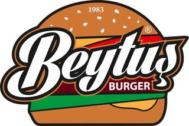
Adapazarı · 1983'ten beri
%100 dana köfte, Beytuş Burger Sos ve sıcak ekmek. Adapazarı'nda, 1983'ten beri.
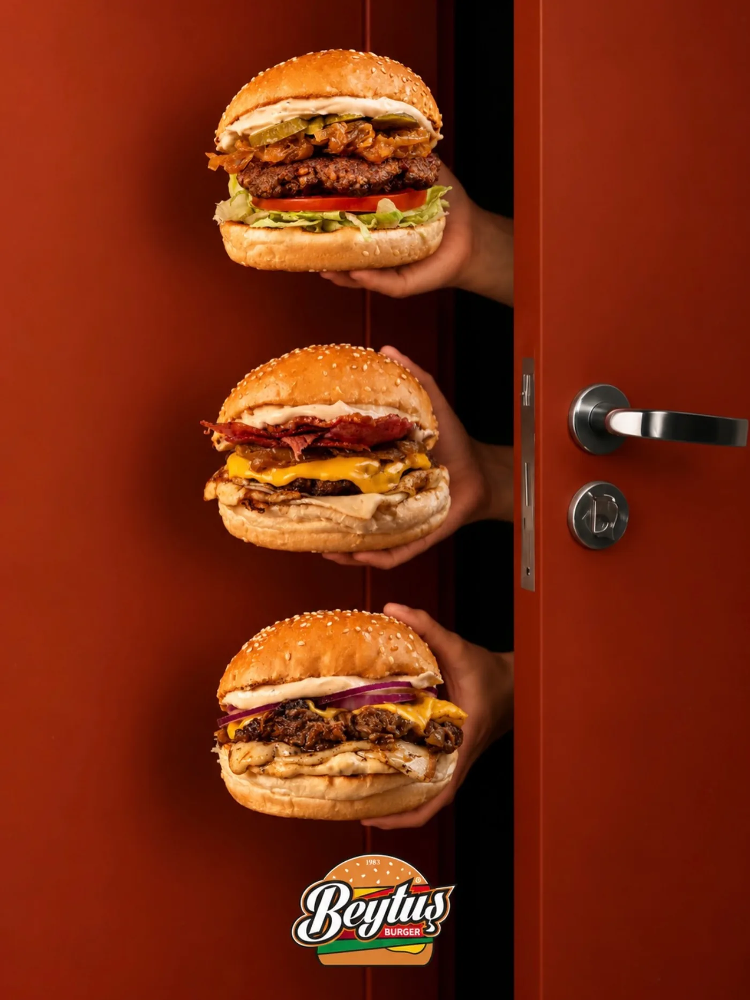
Hikâyemiz
Beytuş, 1980'li yıllarda Sakarya'da başlayan bir lezzet hikâyesi.
İlk olarak sadece hamburger ve kumpir satarak mütevazı bir şekilde yola çıktı. Kurucusu Ahmet Hulusi Altınsoy.

Beytuş mutfağı
Izgaradan tezgâha kısa bir an. Beytuş'un Instagram'ından.
%100 dana köfte, marul, domates, turşu, karamelize soğan, Beytuş Burger Sos.
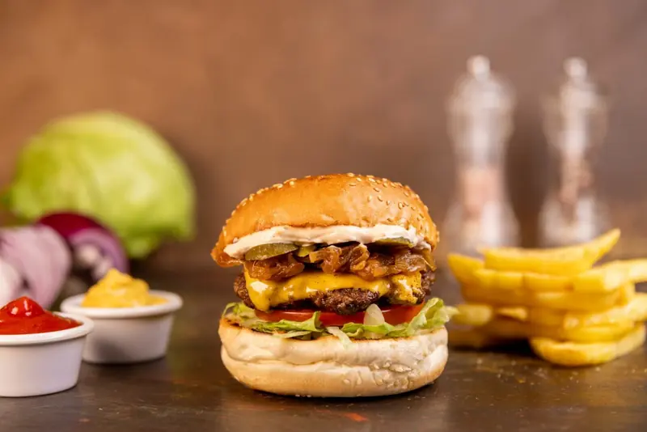
%100 dana köfte, cheddar peyniri, marul, domates, turşu, karamelize soğan, Beytuş Burger Sos.

%100 dana köfte, sotelenmiş mantar, cheddar peyniri, marul, domates, turşu, karamelize soğan, Beytuş Burger Sos.

%100 dana köfte, kapya biber, cheddar peyniri, marul, domates, turşu, karamelize soğan, BBQ sos.
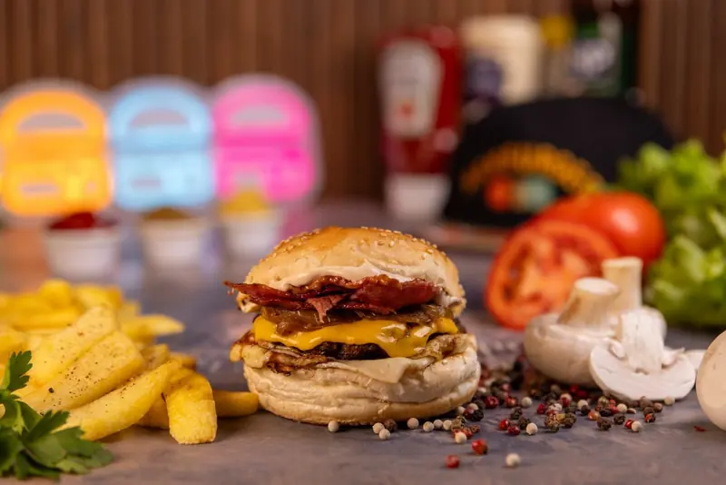
%100 dana köfte, füme et, kaşar ve cheddar peyniri, karamelize soğan, Beytuş Burger Sos.

%100 dana köfte, ajvar sos, kaymak, isli kuru et, cheddar peyniri.
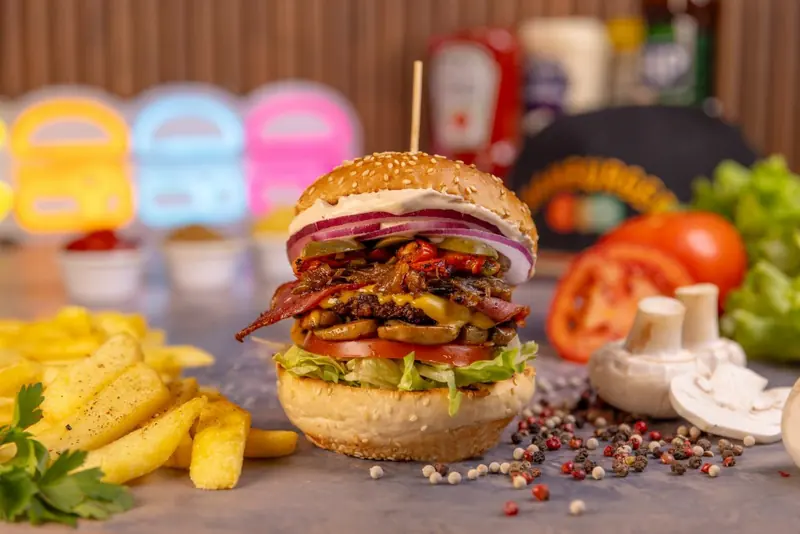
%100 dana köfte, füme et, mantar, kapya biber, mor soğan, cheddar, marul, domates, turşu, karamelize soğan, Beytuş Burger Sos.

Tütsülenmiş tiftik kaburga, cheddar ve kaşar peyniri, kırmızı soğan, mantar sos.
Beytuş karavanı
Fuarlarda, festivallerde, yollarda: Beytuş Burger karavanı.
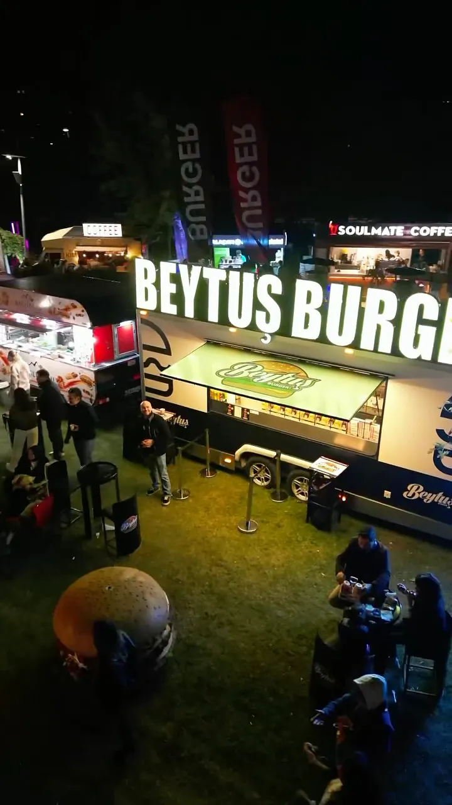
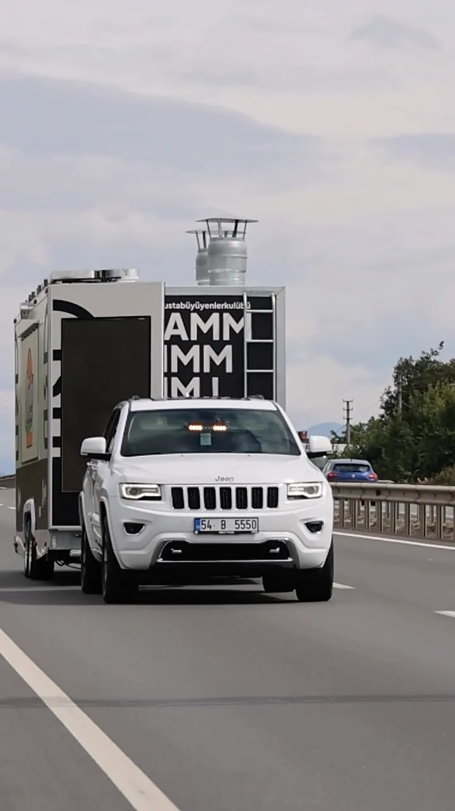
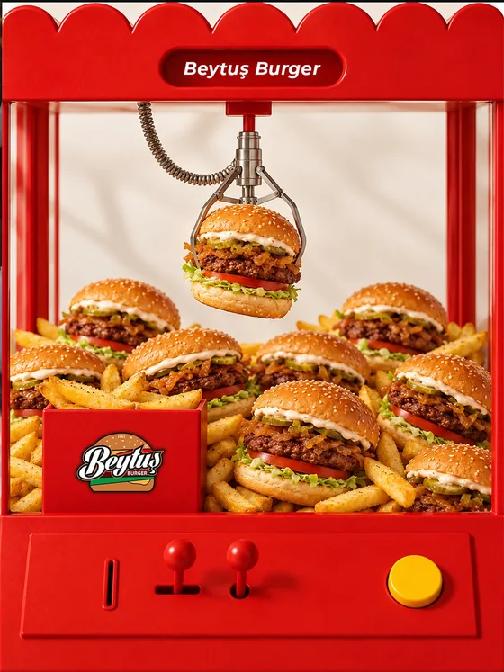
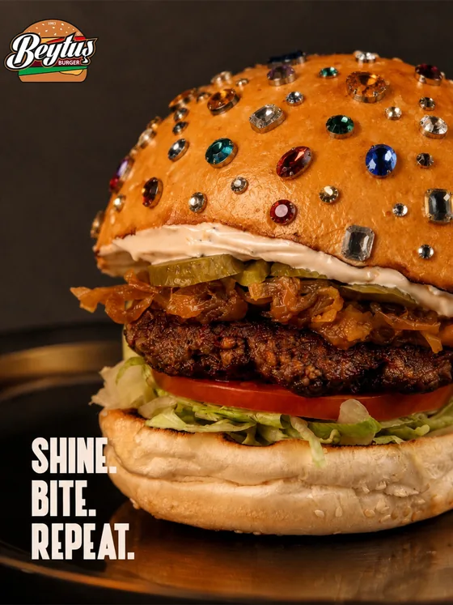
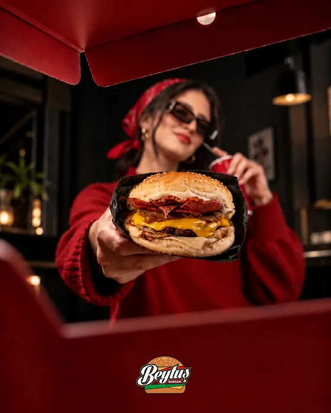
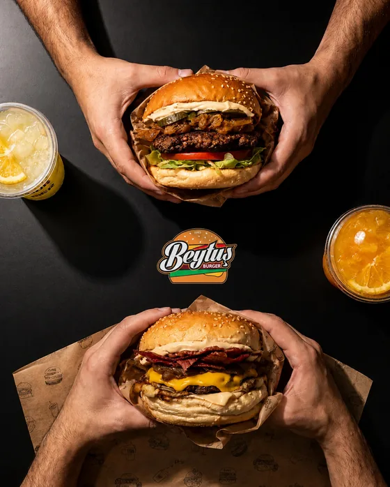
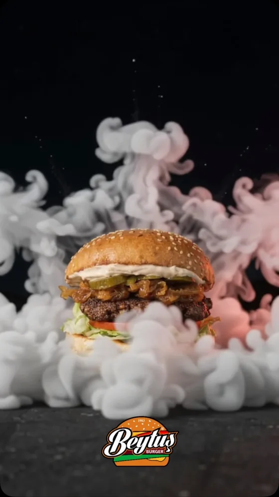
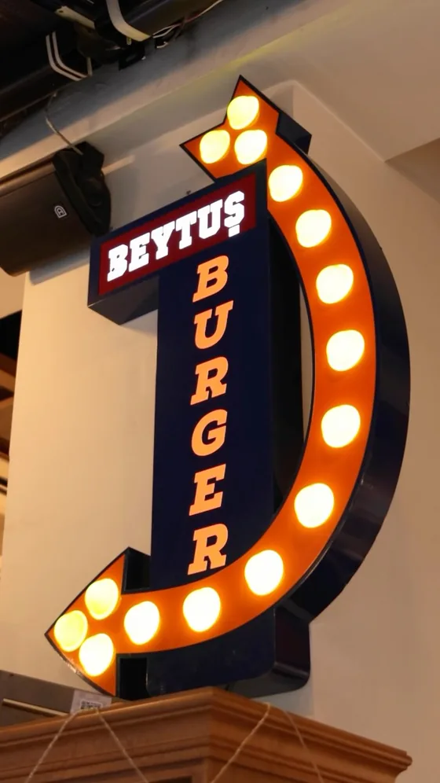
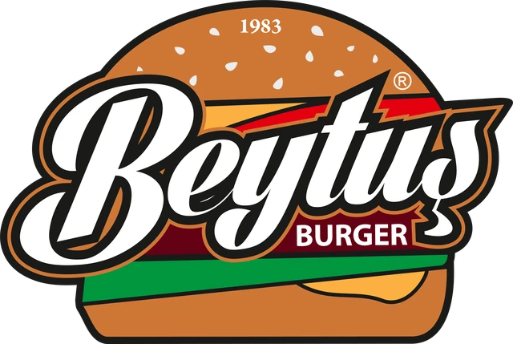
Bizi bulun